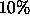

Sometimes you will want to prepare a video for presentation. The procedure to do this depends on the equipment you have available and the desired quality of the production. This appendex discusses some options.
The ATNF has video recording equipment connected to the workstation phoenix. This equipment is not capable of producing high-quality (i.e. broadcast standard) videos, but it has the advantage of being located at the ATNF, and so is convient to use.
Once you have produced your movie, you need to purchase a VHS video cassette and use the video recorders supplied. When playing the movies, it is advisable to use the -fullscreen command-line option for the kvis and xray tools. This will make the image display window take up the entire screen. You should see a button labelled Raise somewhere which allows you to place the displayed image above all other windows. By clicking the right mouse button you can lower this window again, and get back your control panels.
The University of Sydney has created a commercial visualisation laboratory. They are able to make high-quality broadcast standard VFS and Betacam videos. All you need to do is provide them with a sequence of numbered images in a supported format.
VisLab also have facilities to convert from many popular image formats to a format their machinery requires, but this will cost real money. Instead, you should produce files in ``Targa TrueVision'' format, which they will be able to use directly. The karma2ppm command-line utility may be used to produce this format.
The image size required by VisLab is 720 pixels horizontal and 576 pixels vertical. Note that you need to leave a border of  inside this otherwise some television screens will chop the outer parts of your movie.
You would need to use the following parameters for <karma2ppm>:
converter "ppmtotga" extension "tga" out_height 576 out_width 720
You would then type something like:
karma2ppm mymovie image
and you would get a sequence of numbered images starting from 1, such as:
image_01.tga image_02.tga image_03.tga image_04.tga image_05.tga image_06.tga image_07.tga image_08.tga image_09.tga image_10.tga image_11.tga image_12.tga image_13.tga image_14.tga
Try to keep the filenames to 8.3 lengths (i.e. 8 characters for the first part and 3 characters for the extension). This avoids any potential problems with some (broken) operating systems.
These files are already compressed, so further compression is probably not worthwhile. Write these images onto a tape or CD-ROM and take it to VisLab. It is recommended that you attend the video recording session in person, in case there are problems. You may find that the colour balance, intensity or contrast is different on your workstation screen than on the television screen. Aborting the process early if there are problems will save you money.
Rememember: it's your video. Nobody knows exactly how you want it to appear except you.